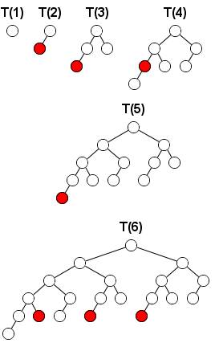

Project Euler 400
Project Euler 400
题目
Fibonacci tree game
A Fibonacci tree is a binary tree recursively defined as: - \(T(0)\) is the empty tree.
\(T(1)\) is the binary tree with only one node.
\(T(k)\) consists of a root node that has \(T(k-1)\) and \(T(k-2)\) as children.
On such a tree two players play a take-away game. On each turn a player selects a node and removes that node along with the subtree rooted at that node.
The player who is forced to take the root node of the entire tree loses.
Here are the winning moves of the first player on the first turn for \(T(k)\) from \(k=1\) to \(k=6\).

Let \(f(k)\) be the number of winning moves of the first player (i.e. the moves for which the second player has no winning strategy) on the first turn of the game when this game is played on \(T(k)\).
For example, \(f(5) = 1\) and \(f(10) = 17\).
Find \(f(10000)\). Give the last \(18\) digits of your answer.
解决方案
题目规定“拿根结点会输”，等价于：根结点不是可选操作（不能删根，否则立刻输）；当树中只剩根结点时，当前玩家无合法操作，于是判负。
因此这个游戏就是一个标准的正常规则的无偏博弈，可以直接使用 Sprague–Grundy 定理：
- 每个局面都有一个 SG 值；
- 当前局面为必败当且仅当 SG 值为 \(0\)；
- 一步“必胜着法”恰好是走到 SG 值为 \(0\) 的着法。
所以目标变为：设 \(G(k)\) 是局面 \(T(k)\)（根不可删）对应的 SG 值。设 \(c(k,g)\) 表示在 \(T(k)\) 中（不含根）删去某个结点后，剩余局面的 SG 值恰为 \(g\) 的结点数量。那么\(f(k)=c(k,0).\)
下面我们只讨论 根不可删 的游戏值。
单枝引理：设某个局面（树）SG 值为 \(x\)。构造一个新局面：新增一个根，让原局面作为它唯一孩子（也就是“在上面加一层根边”）。则新局面 SG 值为 \(x+1\)。
从 mex 定义也能直接归纳证明：新根的可选操作相当于“删掉整棵孩子子树”或“在孩子内部走一步”，其可达 SG 集合刚好整体右移一位，因此 mex 增加 \(1\)。
因此，对任意子树 \(T\)，当它作为某个根的一个孩子出现时，它对总 SG 的贡献是 \(1+\text{SG}(T)\)。
合并引理：若一个根结点有两棵互不相交的子树作为孩子，任何一步只会影响其中一棵子树，另一棵完全不变，因此这是一个直和局面。Sprague–Grundy 定理告诉我们直和的 SG 值为异或。
即如果左右孩子子树对应的局面 SG 值分别为 \(a,b\)，那么整棵树的 SG 值为\(a\oplus b.\)结合上面的挂边 \(+1\)结论，得到：若根的左右孩子子树 SG 值分别为 \(G_L,G_R\)，则整棵树 SG 值为\((1+G_L)\oplus (1+G_R).\)
在 \(T(k)\) 中，左右孩子分别是 \(T(k-1)\) 与 \(T(k-2)\)。于是：
\[G(k)=(1+G(k-1))\oplus (1+G(k-2)).\]
边界：
- \(T(0)\) 是空树，可以方便记为 \(G(0)=-1\)（因为它作为孩子时贡献 \(1+G(0)=0\)，相当于“没有这棵子树”）。
- \(T(1)\) 只有根，根不可删，因此无操作，是必败局面：\(G(1)=0.\)
从递推可得：\(G(2)=(1+G(1))\oplus(1+G(0))=1\oplus 0=1\)，符合直觉（只有一个叶子可删）。
回想一下，我们需要计算的是\(f(k)=c(k,0)\)的值。考虑 \(T(n)\) 的结构：左子树 \(T(n-1)\)、右子树 \(T(n-2)\)。记\(g_L=G(n-1),\quad g_R=G(n-2).\)删一个结点只有四类情况：
- 直接剪掉整个左子树。此时左侧贡献变为 \(0\)，右侧贡献仍是 \(1+g_R\)，所以新 SG 值为\(1+g_R.\)因此这类操作对 \(c(n,g)\) 的贡献为\(\mathbf{1}\{g=1+g_R\}\iff\mathbf{1}\{g_R=g-1\}.\)
- 直接剪掉整个右子树。同理新 SG 值为 \(1+g_L\)，贡献为\(\mathbf{1}\{g_L=g-1\}.\)
- 在左子树内部删。设删完后左子树整体 SG 变为 \(t\)，则整棵树新 SG 为\((1+t)\oplus(1+g_R)=g.\)解出 \(t\)：\((1+t)=(1+g_R)\oplus g\iff t=((1+g_R)\oplus g)-1.\)因此这部分贡献是\(c(n-1,((1+g_R)\oplus g)-1).\)
- 在右子树内部删。同理得到贡献\(c(n-2,((1+g_L)\oplus g)-1).\)
综合四类情况，有：
\[ c(n,g)=\mathbf{1}\{g_L=g-1\}+\mathbf{1}\{g_R=g-1\}+c(n-2,((1+g_L)\oplus g)-1)+c(n-1,((1+g_R)\oplus g)-1). \]
其中\(c(0,g)=0\)，\(c(1,g)=0\)（根下没有结点可删）。
经验与归纳可验证：对每个 \(n\)，只有\(0\le g\le 2n\)的状态可能非零（这是因为\(((1+g_L)\oplus g)-1,((1+g_R)\oplus g)-1\)等值的变换不会超过\(2n\)），因此我们计算时不考虑\(g>2n\)的那些值。
代码
1 |
|